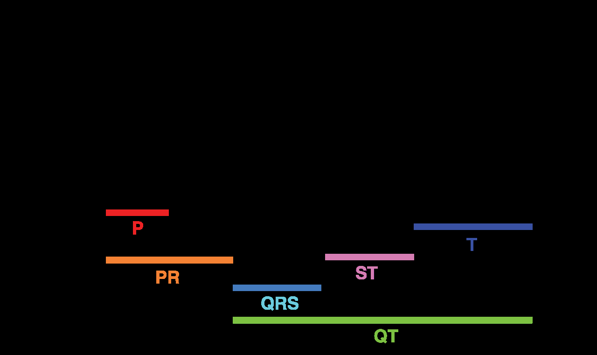

Cơn Ác Mộng Của Người Dùng Thiết Bị Đeo: Điểm HRV Tụt Dốc
Rất nhiều phụ nữ sử dụng các thiết bị theo dõi sức khỏe cao cấp (như WHOOP, Oura Ring hay Apple Watch) từng trải qua trải nghiệm hoang mang này: - Nửa đầu tháng, điểm Phục hồi (Recovery Score) luôn xanh mướt (80%–95%), chỉ số Biến thiên nhịp tim (HRV RMSSD) chạm ngưỡng kỷ lục 65–80 ms. - Thế nhưng, bước sang tuần thứ 3 và thứ 4, dù vẫn đi ngủ đúng giờ, ăn uống lành mạnh và không uống một giọt bia rượu nào, điểm HRV đột ngột tụt xuống 45–55 ms, nhịp tim nghỉ ngơi (RHR) tăng vọt thêm 3 đến 6 nhịp/phút, và ứng dụng liên tục báo cảnh báo "Cơ thể chưa hồi phục".
Hàng triệu phụ nữ đã lầm tưởng rằng mình bị "quá tải tập luyện", "suy nhược cơ thể" hoặc "thiếu ngủ trầm trọng". Nhưng sự thật khoa học là gì?
Theo phân tích tổng quan có hệ thống kinh điển của Schmalenberger et al. (Neuroscience & Biobehavioral Reviews 2019) tổng hợp hàng chục công trình nghiên cứu: HRV của phụ nữ có chu kỳ kinh nguyệt tự nhiên PHẢI giảm sau khi rụng trứng. Đây là dấu hiệu của một chu kỳ rụng trứng khỏe mạnh, không phải bệnh lý!

Cơ Chế Sinh Học: Cuộc Chiến Giữa Estrogen & Progesterone Lên Hệ Thần Kinh Thực Vật
Trái tim của chúng ta không đập đều như máy gõ nhịp; khoảng cách giữa các nhịp tim liên tiếp (khoảng R-R) luôn biến đổi linh hoạt dưới sự giằng co liên tục giữa hai nhánh của Hệ Thần Kinh Thực Vật (Autonomic Nervous System - ANS): 1. Hệ Phó Giao Cảm (Parasympathetic / Vagal Tone): Nhánh "Nghỉ ngơi và Tiêu hóa", làm chậm nhịp tim, tạo ra sự biến thiên nhịp tim lớn (HRV cao → Dấu hiệu cơ thể phục hồi tối ưu). 2. Hệ Giao Cảm (Sympathetic Tone): Nhánh "Chiến đấu hay Bỏ chạy", tăng nhịp tim, làm nhịp tim đập đều đặn và cứng nhắc hơn (HRV thấp → Dấu hiệu cơ thể đang chịu tải sinh lý).
Sự thăng trầm của các hormone sinh dục nữ tác động trực tiếp lên hai nhánh thần kinh này:
1. Pha Nang Trứng (Follicular Phase) — Kỷ Nguyên Của Estrogen
- Estradiol (E2) tăng cao kích thích trung tâm phó giao cảm tại thân não, làm tăng trương lực của dây thần kinh phế vị (Vagus Nerve).
- Estrogen đồng thời kích thích giãn mạch máu thông qua Nitric Oxide, hạ huyết áp ngoại vi.
- Kết quả sinh trắc học: Nhịp tim nghỉ ngơi chạm mức thấp nhất tháng, HRV RMSSD đạt đỉnh cao nhất, cơ thể phục hồi cực nhanh sau các buổi tập nặng.
2. Pha Hoàng Thể (Luteal Phase) — Kỷ Nguyên Của Progesterone
- Sau khi rụng trứng, hoàng thể tiết ra lượng lớn Progesterone.
- Progesterone tác động trực tiếp lên trung tâm điều nhiệt tại vùng hạ đồi, kích hoạt sinh nhiệt và nâng thân nhiệt cơ bản thêm +0.3°C đến +0.5°C.
- Để tản nhiệt và thích nghi với thân nhiệt cao hơn, hệ giao cảm phải tăng cường hoạt động; nhịp tim nghỉ ngơi tăng thêm 3–8 bpm.
- Kết quả sinh trắc học: Trương lực giao cảm lấn át khiến HRV tự nhiên sụt giảm từ 10% đến 20%. Đây là phản ứng bảo vệ sinh tồn hoàn toàn sinh lý!
Bảng Đối Chiếu Chỉ Số Sinh Trắc Học ANS Qua 4 Giai Đoạn
| Giai Đoạn Chu Kỳ | Hormone Thống Trị | Trạng Thái Thần Kinh Thực Vật (ANS) | Biến Thiên Nhịp Tim (HRV RMSSD) | Nhịp Tim Nghỉ Ban Đêm (RHR) | Thân Nhiệt Da Ngoại Vi (BBT) |
|---|---|---|---|---|---|
| Kỳ Kinh (Ngày 1–5) | E2 và P4 đều ở mức đáy. | Trương lực giao cảm giảm dần; chuyển giao sang phó giao cảm. | Bắt đầu hồi phục, tăng dần từ Ngày 2. | Hạ dần từ đỉnh cao của kỳ trước về mức nền. | Nhiệt độ hạ về đường cơ sở (36.2°C-36.4°C). |
| Pha Nang Trứng (Ngày 6–13) | Estradiol (E2) tăng vọt. | Phó giao cảm (Vagus) thống trị tuyệt đối. | Chạm đỉnh cao nhất tháng (Cao hơn mức trung bình 10–25%). | Chạm đáy thấp nhất tháng (Ví dụ: 48–52 bpm). | Thấp và ổn định nhất tháng. |
| Rụng Trứng (Ngày 14) | Đỉnh sóng LH; sụt giảm nhẹ estrogen. | Chuyển dịch ngắn hạn; giao cảm nhích nhẹ. | Dao động nhẹ quanh mức đỉnh. | Nhích tăng nhẹ 1–2 bpm. | Điểm võng nhiệt (Nadir) ngay trước khi vọt tăng. |
| Pha Hoàng Thể (Ngày 15–28) | Progesterone (P4) áp đảo. | Giao cảm chiếm ưu thế nhẹ do sinh nhiệt và giữ nước. | Sụt giảm tự nhiên 10%–20% (Vùng Vàng trên WHOOP). | Tăng thêm +3 đến +8 bpm so với pha nang trứng. | Tăng vọt +0.3°C đến +0.5°C liên tục trong 10–14 ngày. |
4 Sai Lầm Nghiêm Trọng Khi Đọc Dữ Liệu HRV Ở Nữ Giới
- So Sánh HRV Của Mình Với Nam Giới Hoặc Người Khác: HRV là chỉ số mang tính cá nhân hóa 100%. Một người có HRV 40 ms hoàn toàn có thể khỏe mạnh tương đương người có HRV 90 ms do cấu trúc gen và kích thước buồng tim khác nhau.
- Cố Ép Mình Đạt "Vùng Xanh" Ở Pha Hoàng Thể: Uống thêm thuốc bổ hoặc nhịn tập điên cuồng ở tuần thứ 4 để kéo HRV lên vùng Xanh là hành động chống lại quy luật sinh lý tự nhiên của progesterone.
- Bỏ Tập Hoàn Toàn Khi Thấy HRV Vàng: Điểm Vàng ở pha hoàng thể không có nghĩa là bạn phải nằm yên; nó chỉ là tín hiệu nhắc bạn không nên đẩy cơ thể vượt quá ngưỡng chịu đựng (Over-reaching).
- Không Ghi Nhận Tác Động Của Thuốc Tránh Thai: Phụ nữ dùng thuốc tránh thai nội tiết kết hợp (Combined OCPs) không có đỉnh estrogen/progesterone tự nhiên; do đó, HRV của họ thường phẳng hơn và không thể hiện bước giảm chu kỳ đặc trưng.
Giao Thức 4 Bước Ứng Dụng HRV Vào Tập Luyện Thông Minh
- Thiết Lập 2 Đường Baseline Cá Nhân Hóa: Thay vì dùng một con số trung bình chung cho cả tháng, hãy tự tính: - Baseline Pha Nang Trứng: Trung bình HRV từ Ngày 1 đến Ngày 13. - Baseline Pha Hoàng Thể: Trung bình HRV từ Ngày 15 đến Ngày 28.
- Khai Thác Tối Đa "Cửa Sổ Vàng" Nang Trứng: Khi HRV đang ở đỉnh cao nhất tháng, hãy mạnh dạn đăng ký các buổi tập tạ nặng, bài tập thể lực cường độ cao hoặc thử thách cá nhân mới; khả năng phục hồi cơ bắp và chống viêm lúc này đang ở mức phi thường.
- Chủ Động Hạ Nhiệt Để Bảo Vệ HRV Pha Hoàng Thể: Vì progesterone làm tăng thân nhiệt khiến tim phải đập nhanh hơn khi ngủ, hãy chủ động hạ điều hòa phòng ngủ xuống 18°C-20°C, tắm nước ấm trước khi ngủ 90 phút và bổ sung 300–400 mg Magnesium Glycinate để hỗ trợ thần kinh phó giao cảm.
- Cách Đọc Tín Hiệu Cảnh Báo Thật Sự: Bạn chỉ cần lo lắng nếu HRV pha hoàng thể sụt giảm sâu hơn 30% so với đường cơ sở của chính pha hoàng thể, hoặc nhịp tim nghỉ ngơi tăng vọt trên 10 bpm kèm theo sốt—đó mới là dấu hiệu nhiễm trùng hoặc kiệt sức thật sự.
Nguồn Y Khoa Lâm Sàng & Tài Liệu Tham Khảo
- Tenan, M. S., et al. (2014). Changes in resting heart rate variability across the menstrual cycle: a systematic review. Journal of Strength and Conditioning Research, 28(8), 2368-2376. Tạp chí JSCR: Biến Thiên Nhịp Tim HRV & Chu Kỳ (PMID: 24476694) ↗
- Schmalenberger, K. M., et al. (2019). Menstrual cycle changes in vagally mediated heart rate variability: a systematic review and meta-analysis. Neuroscience & Biobehavioral Reviews, 105, 303-317. Tạp chí Neuroscience & Biobehavioral Reviews: Thần Kinh Phế Vị & Nội Tiết (PMID: 31442491) ↗
- Grant, C. C., et al. (2020). The effect of the menstrual cycle and oral contraceptives on heart rate variability: a systematic review and meta-analysis. Frontiers in Physiology, 11, 560114. Tạp chí Frontiers in Physiology: Thuốc Tránh Thai & Tự Chủ Thần Kinh (PMID: 33132924) ↗
- WHOOP Research & Clinical Science (2025). Heart Rate Variability (HRV) and Menstrual Cycle Tracking. WHOOP The Locker: How the Menstrual Cycle Impacts HRV and Recovery ↗